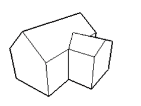

Create Quad-Mesh
Rotate camera about model.
Tool Operation
Click anywhere in drawing area.
Move cursor in any direction to rotate around center of drawing area.
Modifier Keys
Shift = Pan Tool
Ctrl = Suspend gravity (do not try to keep vertical edges up and down)
Advanced Operations
Orbiting With a Three-Button Mouse
Suspending the Gravity Setting